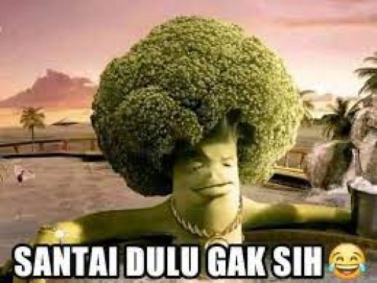

Sebuah unggahan yang menanyakan mengapa kapibara dijuluki "Masbro" , ramai di media sosial Twitter. Dibuat oleh akun ini pada Sabtu (4/2/2023), twit disertai dengan foto editan tangkapan layar hasil pencarian terkait kapibara. Foto tersebut menuliskan, Masbro alias kapibara merupakan jenis hewan pengerat terbesar yang masih ada di dunia "Masbro merupakan hewan asli daerah tropis dan lembap di Meta," narasi dalam foto. "awal kapibara tuh disebut masbro tuh gimana sih? kok orang-orang pada nyebut masbro ya?" tanya pengunggah dalam twitnya. Twit ini pun menarik perhatian hingga dilihat lebih dari 33.300 kali dan disukai oleh 497 pengguna Twitter pada Minggu (5/2/2023) pagi. Menanggapi unggahan kapibara, warganet mengatakan bahwa julukan "Masbro" lantaran hewan ini amat santai dan ramah kepada sesama hewan maupun manusia. "Mungkin karena kapibara ramah bgt, hewan paling ramah, baik dengan sesama hewan atau manusia Kapibara ramah bgt," komentar salah satu warganet. "intinya karna nih hewan santai dan ramah makanya di panggil masbro," tulis warganet. "Dari meme fesbuk. Kalo setauku mah gara gara capybara ini "ekstrovert" kek santuy banget sama hewan lain. Nah terus dibikin meme masbro ini yang kesannya kek santuy gitu," kata warganet lain. Artikel ini telah tayang di TribunJatim.com dengan judul Arti Kata Mas Bro, Terkuak Alasan Netizen Kasih Julukan ke Kapibara, Meme yang Viral di Sosial Media,

Farhan kebab adalah suatu reaction image yang menampilkan orang tengah menjilat sesuatu dan ditambahi dengan tulisan "Farhan Kebab" dan biasanya digunakan untuk menunjukkan orang yang amat kelaparan atau menjilat sisa makanan sampai sangat bersih. Diketahui bahwa reaction image ini pertama kali dibuat oleh akun Erwin Coeg pada tanggal 27 Juli silam di mana ia membuat video tentang reaksi siswa yang kelaparan saat bel istirahat berbunyi yang mana ia menyebut siswa yang kelaparan sampai menjilat-jilat lantai ini sebagai Farhan Kebab. Video aslinya berasal dari akun tiktok @tiktongue (sudah tidak ada videonya di tiktok namun polosan memenya sudah dibagikan oleh akun Melon Asoy pada tanggal 3 Agustus silam) dan lagu yang digunakan dalam video tersebut adalah lagu OST Manusia Harimau dengan judul Aku dan Kamu Satu yang dinyanyikan oleh Sarah Saputri..

TMeme brokoli santai dulu gak sih kini banyak digunakan di media sosial dengan berbagai konteks, misalnya sindiran dan curhatan. Gambar meme brokoli santai dulu gak sih sebenarnya berasal dari sebuah iklan benang gigi merek Colgate yang sudah tayang sejak lebih dari satu dekade lalu, pada 2010. Meski iklannya sudah ada sejak lama, namun gambar brokoli tersebut baru populer digunakan untuk bahan meme sejak 2021. Meme ini mulai banyak dijadikan video pada Oktober 2021, dan sekitar waktu itu mulai banyak warganet yang menggunakan gambar brokoli untuk dijadikan meme versi gambarnya. Seperti dikutip redaksi dari sejumlah sumber, Jumat (3/3/2023), meme ini diberi nama broccoli in hot tub dan saat ini sedang viral di Indonesia. Yang pasti meme brokoli santai dulu gak sih kerap digunakan oleh warganet untuk mengungkapkan berbagai perasaan, terutama untuk sindiran kepada orang lain maupun diri sendiri.
Asal usul dari meme Roger Sumatera ini sendiri hingga sekarang kabarnya masih simpang siur dan terdapat banyak versi. Salah satunya adalah yang disebutkan oleh salah satu akun TikTok bernama @branzo_ yang menyebutkan bahwa asal usul meme Roger Sumatera berasal dari akun Facebook bernama Uoh Paksa. Dalam postingan Uoh Paksa tersebut, dirinya membuat caption yang menyindir tim Esports DOTA 2 yang bernama BOOM ID dan memiliki logo Serigala.